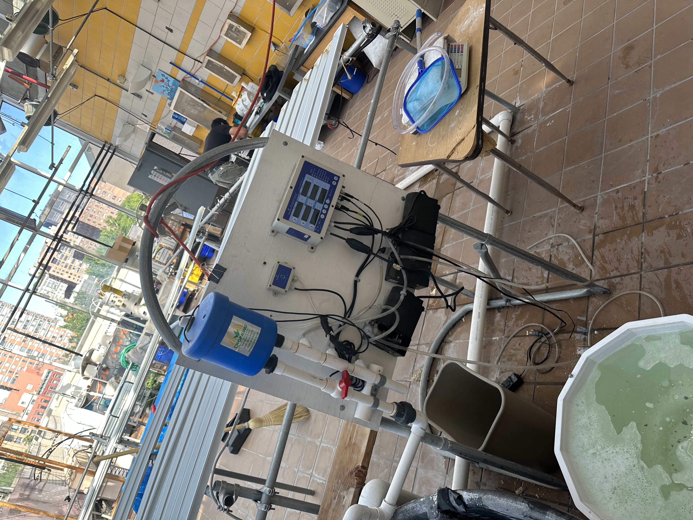
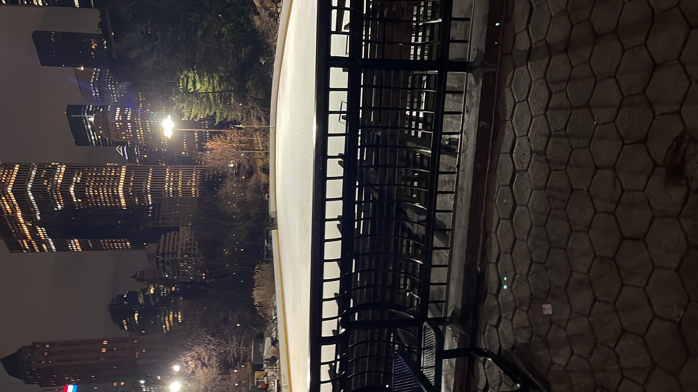
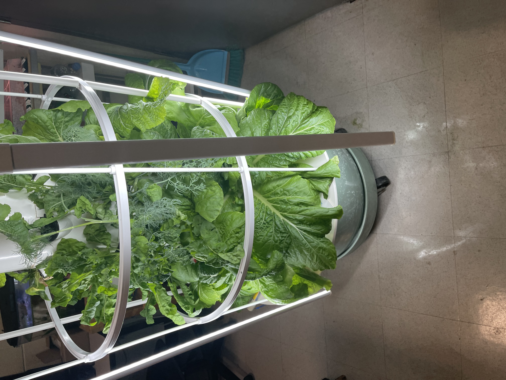
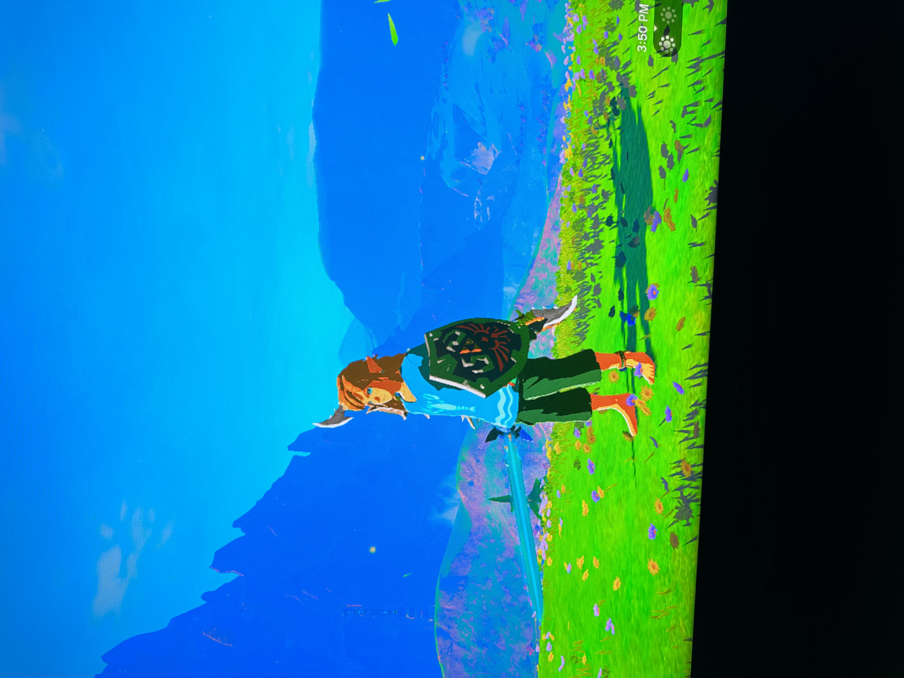

About Me


Hello everyone, my name is
Bryand Catedral
I am a graduated student from co-op tech. I gained skills from trades such as plumbing and barbering,I am currently a intern for a internship called green team.I do task in the internship such as cleaning and being responsible for the green house. I am taking a course called Ag-Tech Change Food for Good it has helped me learn many skills such as being more aware of aquaculture and the purpose of growing.It has also managed to keep me going and not give up the coding has been really hard to do but i try to get it done.In my free time, I like to clean and relax at home.I jork as a cashier at the supermarket "Ctown,2395 Frederick Douglass Blvd, New York, NY 10027", it is a very complex job and
sometimes its has it's ups and downs but I have worked there for 7 months now and continuing.most of my hobbies are keeping things clean and oraginzed and i also like to play video games.



